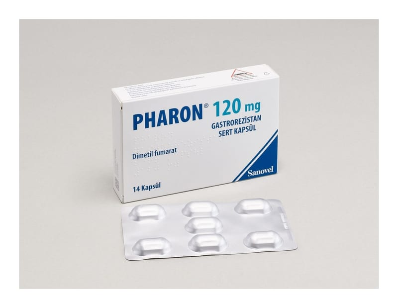

Pharon 120 mg Gastrorezistan Sert Kapsül, 14 Adet

Ne için kullanılır
KT · Bölüm 1PHARON 120 mg, 14 adet gastrorezistan sert kapsül içeren blister ambalajda takdim edilmektedir. Kapsüller, kapak rengi yeşil ve gövde rengi beyaz, gövde kısmı “DMF 120” baskılı, içerisinde beyaz veya beyazımsı minitabletler bulunan No: 0 sert jelatin kapsüllerdir.
PHARON etkin madde olarak, dimetil fumarat içermektedir.
PHARON, 13 yaş ve üzeri hastalarda tekrarlayan-düzelen tip multiple skleroz (MS) tedavisinde kullanılmaktadır.
MS, merkezi sinir sistemini (MSS), özellikle beyin ve omuriliğin fonksiyonunu etkileyen uzu n süreli bir hastalıktır. Tekrarlayan-düzelen (relapsing- remitting) tip MS sinir sistemi belirtilerinin tekrarlayan atakları ile karakterizedir. Belirtiler hastadan hastaya değişmekle birlikte tipik olarak yürüme zorlukları, denge bozuklukları ve görme zorlukları (örn. bulanık ya da çift görme) içermektedir. Bu belirtiler atak sona erdikten sonra tamamen ortadan kaybolabilir fakat bazı problemler kalıcı olabilir. PHARON’un be yin ve omuriliğe zarar veren savunma sistemini baskılayarak etki ettiği düşünülmektedir. Bu, hastalığınızın kötüleşmesinin gecikmesine yardımcı olur.